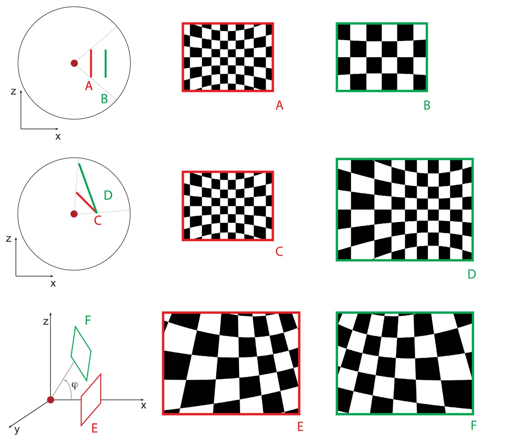

Define Display
ViewWindow
ViewWindow are windows into the virtual environment that is being rendered.
To better illustrate how viewing windows interact with the visual environment, this is an example of the same stimulus (mapped onto a sphere) viewed through different viewing windows. The first two rows are from a top down perspective, with the red dot indicating the subject and the lines indicating the placement of the viewing window. The images on the right hand side show the final image as viewed from those viewing windows.

Each ViewWindow must be accompanied by a DrawViewport operator. Additional displays can be defined by adding multiple ViewingWindow/DrawViewport nodes.
DrawViewport
The DrawViewport operator draws the ViewWindow to a display and provides additional options for positioning the ViewWindow on a display.
This example workflow illustrates how we can combine the ViewWindow and DrawViewport operators to flexibly position different views (for instance, when we have two monitors side by side).
A single checkboard is drawn in the visual environment and two ViewWindows are positioned side by side (by adjusting the X-axis variable in the Translation property). Then we draw the two views to two displays.
Video Walkthrough
Post-processing Operators (optional)
Bonvision comes with post-processing operators to correct for various distortions in the final display of the image (for instance, when using a projector in conjunction with a mirror/lens or projecting on non-uniform surfaces). These operators would be placed between the ViewWindow and DrawViewport operator.
PerspectiveMapping
The PerspectiveMapping operator can be used to correct distortions when projecting displays on the walls of an rectangular arena. One would specify 4 ViewWindows, one for each wall, and then specify a PerspectiveMapping for each view window to transform the view before attaching a DrawViewport operator.
An example implementation can be found at https://groups.google.com/g/bonsai-users/c/WV7V57vlSAk/m/XjQPqCJkCAAJ.
MeshMapping
The MeshMapping operator is best used to correct distortions when projecting displays on a demispherical dome. As the process is more complicated, check out the mesh mapping calibration article for more information how to measure and calibrate this operator.
GammaCorrection
The GammaCorrection operator applies simple intensity mapping of the three colors, to make sure the stimuli are linear. It uses a simple LUT (Look-up-table), for Red, Green and Blue. Check out the gamma calibration article for more information on how to measure and calibrate this operator.
Other nodes to document (under construction)
ViewMapping